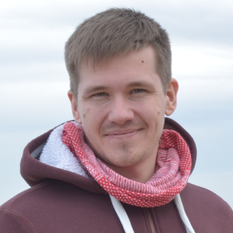
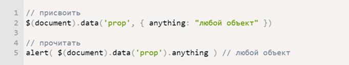

<!DOCTYPE html>
<html>
  <head>
    <meta charset="utf-8">
    <title>My_LoftSchool_homework</title>
    <meta content="" name="author">
    <meta content="" name="description">
    <meta content="" name="keywords">
    <meta content="width=device-width, initial-scale=1" name="viewport">
    <meta content="ie=edge" http-equiv="x-ua-compatible">
    <link rel="stylesheet" href="/assets/css/foundation.css">
    <link rel="stylesheet" href="/assets/css/fonts.css">
    <link rel="stylesheet" href="/assets/css/main.css">
    <script src="/assets/js/foundation.js" defer></script>
    <script src="/assets/js/app.js" defer></script><!--[if lt IE 9]>
    <script src="http://cdnjs.cloudflare.com/ajax/libs/html5shiv/3.7.2/html5shiv.min.js"></script><![endif]-->
  </head>
  <body></body>
</html>
<div class="wrapper">
  <div class="bg_image bg_image_height">
    <div class="header">
      <div class="header__social-icons">
        <ul class="social-icons__list">
          <li class="social-icons__item"><a class="social-icons__link" href="https://vk.com/raulduke_kk" target="_blank">
              <svg class="social-icons__icon">
                <use xlink:href="assets/sprite/sprite.svg#vk"></use>
              </svg></a></li>
          <li class="social-icons__item"><a class="social-icons__link" href="https://github.com/gb-mikhail" target="_blank">
              <svg class="social-icons__icon">
                <use xlink:href="assets/sprite/sprite.svg#github"></use>
              </svg></a></li>
          <li class="social-icons__item"><a class="social-icons__link" href="#" target="_blank">
              <svg class="social-icons__icon">
                <use xlink:href="assets/sprite/sprite.svg#in"></use>
              </svg></a></li>
        </ul>
      </div>
      <div class="header__burger-icon"><a class="burger-icon__link" href="#">
          <svg class="burger-icon__icon">
            <use xlink:href="assets/sprite/sprite.svg#hamburger"></use>
          </svg></a></div>
    </div>
    <div class="my-container__wrapper">
      <div class="my-container">
        <div class="stars"></div>
        <div class="my-photo"></div>
        <h1 class="main_h1 my-blog-header">блог</h1>
        <p class="my-status">Статьи, которые я написал</p>
      </div>
    </div>
    <div class="triangle">
      <svg class="left-triangle" xmlns="http://www.w3.org/2000/svg" viewbox="0 0 100 100" preserveaspectratio="none">
        <polygon fill="#faf8f0" points="0,0 0,100 100,100"></polygon>
      </svg>
      <svg class="right-triangle" xmlns="http://www.w3.org/2000/svg" viewbox="0 0 100 100" preserveaspectratio="none">
        <polygon fill="#faf8f0" points="0,100 100,0 100,100"></polygon>
      </svg>
    </div>
  </div>
  <div class="main-information__wrapper main-information__wrapper_blog-style">
    <div class="left-navigation">
      <ul class="left-navigation__list">
        <li class="left-navigation__item" href="#"><a class="left-navigation__link">Самое важное в SASS</a></li>
        <li class="left-navigation__item" href="#"><a class="left-navigation__link">
            Приёмы в вёрстке, без которых
            не обходится ни один сайт</a></li>
        <li class="left-navigation__item" href="#"><a class="left-navigation__link">Самый необходимый набор Gulp плагинов</a></li>
        <li class="left-navigation__item" href="#"><a class="left-navigation__link">Почему я выбрал Jade</a></li>
      </ul>
    </div>
    <div class="article-container">
      <div class="article-container__wrapper">
        <h2 class="main_h2 text_color_grey">Самое важное в SASS</h2>
        <div class="article-container__date">22 ноября 2016</div>
        <div class="article-container__text regular-text">
          Таким образом начало повседневной работы по формированию позиции позволяет выполнять важные задания по разработке направлений прогрессивного развития. Разнообразный и богатый опыт новая модель организационной деятельности играет важную роль в формировании новых предложений. Товарищи! новая модель организационной деятельности играет важную роль в формировании систем массового участия.
          Не следует, однако забывать, что укрепление и развитие структуры обеспечивает широкому кругу (специалистов) участие в формировании систем массового участия. Идейные соображения высшего порядка, а также рамки и место обучения кадров обеспечивает широкому кругу (специалистов) участие в формировании позиций, занимаемых участниками в отношении поставленных задач. Товарищи! постоянный количественный рост и сфера нашей активности способствует подготовки и реализации модели развития. С другой стороны рамки и место обучения кадров влечет за собой процесс внедрения и модернизации системы обучения кадров, соответствует насущным потребностям.
          
        </div>
      </div>
      <div class="article-container__wrapper">
        <h2 class="main_h2 text_color_grey">Приёмы в вёрстке, без которых не обходится ни один сайт</h2>
        <div class="article-container__date">13 ноября 2016</div>
        <div class="article-container__text regular-text">
          Таким образом начало повседневной работы по формированию позиции позволяет выполнять важные задания по разработке направлений прогрессивного развития. Разнообразный и богатый опыт новая модель организационной деятельности играет важную роль в формировании новых предложений. Товарищи! новая модель организационной деятельности играет важную роль в формировании систем массового участия.
          Не следует, однако забывать, что укрепление и развитие структуры обеспечивает широкому кругу (специалистов) участие в формировании систем массового участия. Идейные соображения высшего порядка, а также рамки и место обучения кадров обеспечивает широкому кругу (специалистов) участие в формировании позиций, занимаемых участниками в отношении поставленных задач. Товарищи! постоянный количественный рост и сфера нашей активности способствует подготовки и реализации модели развития. С другой стороны рамки и место обучения кадров влечет за собой процесс внедрения и модернизации системы обучения кадров, соответствует насущным потребностям.
          
        </div>
      </div>
    </div>
  </div>
  <div class="footer">
    <div class="main-footer">
      <ul class="main-footer__grey-line">
        <li class="main-footer__block">
          <p class="light-text text_color_white">Этот сайт я сделал в рамках обучения в Школе онлайн образования LoftSchool</p>
        </li>
        <li class="main-footer__block">
          <ul class="main-footer__list">
            <li class="main-footer__item"><a class="main-footer__link" href="portfolio.html">Мои работы</a></li>
            <li class="main-footer__item"><a class="main-footer__link" href="about-me.html">Обо мне</a></li>
            <li class="main-footer__item"><a class="main-footer__link" href="blog.html">Блог</a></li>
            <li class="main-footer__item"><a class="main-footer__link" href="index.html">Авторизация</a></li>
          </ul>
          <div class="main-footer__social-icons">
            <div class="header__social-icons">
              <ul class="social-icons__list">
                <li class="social-icons__item"><a class="social-icons__link" href="https://vk.com/raulduke_kk" target="_blank">
                    <svg class="social-icons__icon">
                      <use xlink:href="assets/sprite/sprite.svg#vk"></use>
                    </svg></a></li>
                <li class="social-icons__item"><a class="social-icons__link" href="https://github.com/gb-mikhail" target="_blank">
                    <svg class="social-icons__icon">
                      <use xlink:href="assets/sprite/sprite.svg#github"></use>
                    </svg></a></li>
                <li class="social-icons__item"><a class="social-icons__link" href="#" target="_blank">
                    <svg class="social-icons__icon">
                      <use xlink:href="assets/sprite/sprite.svg#in"></use>
                    </svg></a></li>
              </ul>
            </div>
          </div>
        </li>
        <li class="main-footer__block">
          <p class="light-text line-height_value_26 text_color_white">hobbyzz.mikhail</p>
          <p class="light-text line-height_value_26 text_color_white">gb.mikhail@gmail.com</p>
          <p class="light-text line-height_value_26 text_color_white">+38(066)004-0-101</p>
          <p class="light-text line-height_value_26 text_color_white">
            Тернополь, ул. Гаевая, 29
            
          </p>
        </li>
      </ul>
      <div class="main-footer__blue-line">
        <p class="light-text text_color_white">© Губа Михаил | создавалось бессонными ночами во время обучения в LoftSchool | 2017</p>
      </div>
    </div>
  </div>
</div>